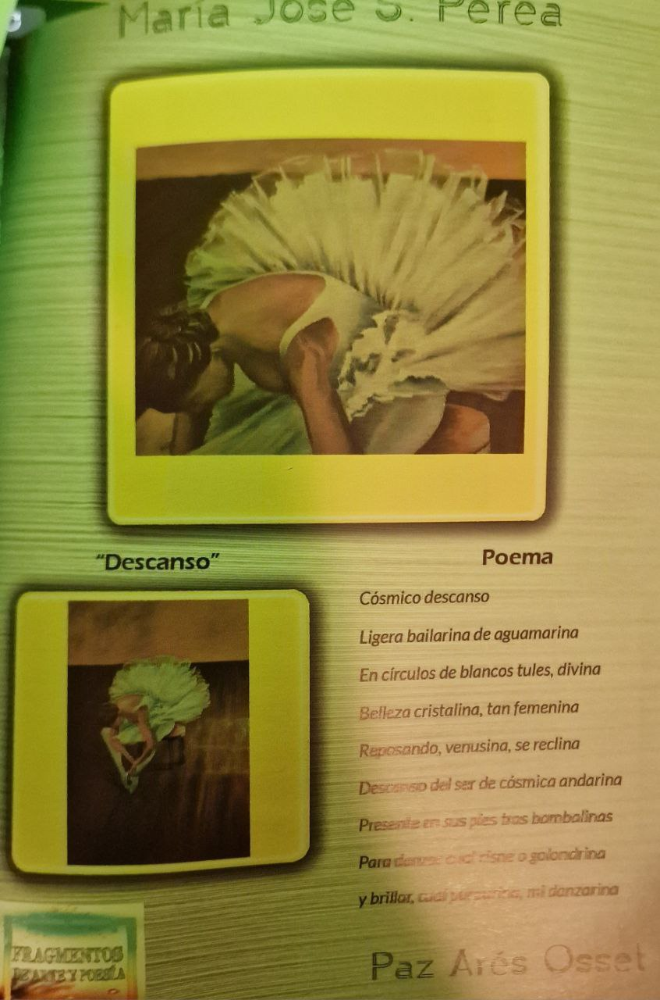

A serene poem about a graceful dancer, inspired by cosmic beauty.
Un sereno poema sobre una bailarina, inspirada en la
belleza
cósmica.
Una serena poesia su una ballerina, ispirata alla bellezza
cosmica.
一首关于优雅舞者的宁静诗歌，灵感来自宇宙之美。
قصيدة هادئة عن راقصة رشيقة، مستوحاة من جمال الكون.
"Cosmic Rest" is a poem by Paz Arés Osset, published in the book "Fragmentos de arte y poesía". It's inspired
by a
painting by María José S. Perea, depicting a graceful ballerina.

"Cósmico descanso" es un poema de Paz Arés Osset, publicado en el libro "Fragmentos de arte y poesía". Está
inspirado en un cuadro de María José S. Perea, que muestra a una delicada bailarina.
"Riposo Cosmico" è una poesia di Paz Arés Osset, pubblicata nel libro "Frammenti di arte e poesia". È
ispirata a un
dipinto di María José S. Perea, che raffigura una graziosa ballerina.